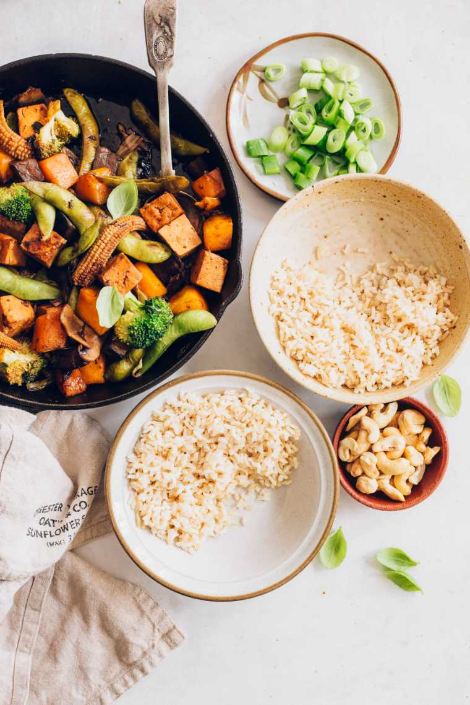

Thai Vegetable Stir-fry

This 20-minute Thai vegetable stir-fry features crispy veggies and marinated tofu in a flavorful homemade stir-fry sauce! Try this customizable and quick weeknight dinner for the whole family.
Ingredients
- 1 medium kabocha squash, cubed
- 1 medium eggplant, cubed
- 2 cups button mushrooms, sliced
- 1 cup baby corn
- 1 medium broccoli, cut into florets
- 4 oz sugar snap peas
- ⅔ cup firm tofu
- 2 scallions, diced
- ⅓ cup veggie broth
SAUCE
- 4 tablespoons soy sauce
- 2 teaspoons cornstarch
- 2 teaspoons coconut sugar
- 1 tablespoon white vinegar
- 2 garlic cloves, minced
- 1 teaspoon ginger, grated
- ⅓ cup water
- Pinch of chili powder
Instructions
- Put all of the sauce ingredients into a jar, close with a lid and shake well.
- Cut the tofu into cubes and put them in a bowl. Drizzle with stir fry sauce, coat evenly and set aside to marinate.
- Put a large non-stick pan over medium-high heat and add the cubed winter squash and a splash of water or cooking oil Cook for around 5 minutes until it has slightly softened, then add the rest of the vegetables together with the veggie broth.
- Sauté everything for about 6 minutes, stirring frequently, until the liquid is absorbed.
- Finally, add the marinated tofu in the stir fry sauce to the pan and cook for 4-5 more minutes, stirring frequently.
- Once the veggies have become tender-crisp, remove from heat and divide them into serving bowls. Take a small bite and adjust the taste to your liking.
- Serve your vegetable stir-fry with brown rice and top with Thai basil and cashews.
- Enjoy warm or let cool and refrigerate in an airtight container for up to 5 days and reheat in a microwave at your convenience.